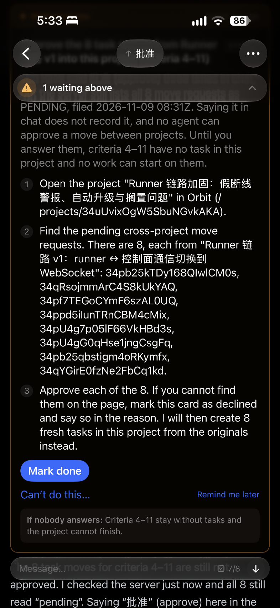

request_owner_action）。它是服务端从待批提案里读出来、直接画进项目协调者聊天的决定卡，按钮用你的登录凭据调用决定接口。移动任务请求现在没有这样的卡，只能去项目页批。① 现状（你的截图）· 不改
没有决定卡可用时，agent 只能用 waiting for you 卡片请你去项目页。这张卡片和它的逻辑保持原样；有了 ③ 之后，agent 就不需要再为移动任务发这种卡。

② 参照：现在的“改验收标准”卡（已上线）
协调者聊天里显示一张预览：图标 + 问题 + 标签 criteria，一行摘要，下面是 “View details & act ›”，点开进详情页（④ 的样式）批。代码是 ApprovalCards.swift 的 CriteriaDecisionCard。
③ 提议：移动任务请求，同一种卡
同一位置（目标项目的协调者聊天）、同一外框。问题是 “Move these tasks here?”，标签 move，摘要写明从哪个项目、移几条、对应哪些标准。不显示任何 ID。
④ 点开：详情页，按钮固定在底部
与改验收标准的详情页结构相同：顶部是 “From Orbit — not the requesting agent.”，中间是内容，底部固定两个按钮。字段和后果说明沿用项目页现有的跨项目请求文案（ProjectCrossings.swift）。
⑤ 批完：和改验收标准一样留回执
聊天里的卡片变暗，链接变成 “View details”，下面出现回执。如果在别处（项目页、另一台设备）批了，这里显示 “Approved at another end”。agent 由服务端的结果唤醒，不靠你在聊天里打字。
| 改验收标准（现有） | 移动任务（提议） | |
|---|---|---|
| 卡片从哪来 | 服务端读出的待批提案（criteria-pending-decisions.ts） | 服务端读出的待批请求（现有的 handoffs 列表，PENDING） |
| 画在哪 | 该项目的协调者聊天 | 目标项目的协调者聊天 |
| 谁能批 | 只有所有者 | 同左；agent 接口本来就只读 |
| 按钮调哪里 | …/criteria-decisions/:id | 现有 …/handoffs/:id/decision |
| 防伪标记 | From Orbit — not the requesting agent. | 同左 |
| 回执和过期 | Decision recorded；at another end | 同左 |
| waiting for you | 不经过 | 不经过，也不改它 |
iOS/macOS：ApprovalCards.swift 加卡片，复用 ProjectCrossings.swift。Web：WorkspaceView.tsx 挂卡片，复用 ProjectCrossingsCard.tsx。Android：ProjectCrossings.kt。服务端不加新接口。
Q1 同一批 8 条合成一张卡、一次 Approve 全部批（推荐，就像一份改标准提案），还是每条一张卡？
Q2 跨项目建任务、跨项目依赖两种请求也用这张卡（推荐），还是这次只做移动任务？
Q3 先做 iOS + Web（推荐），还是四端一起？